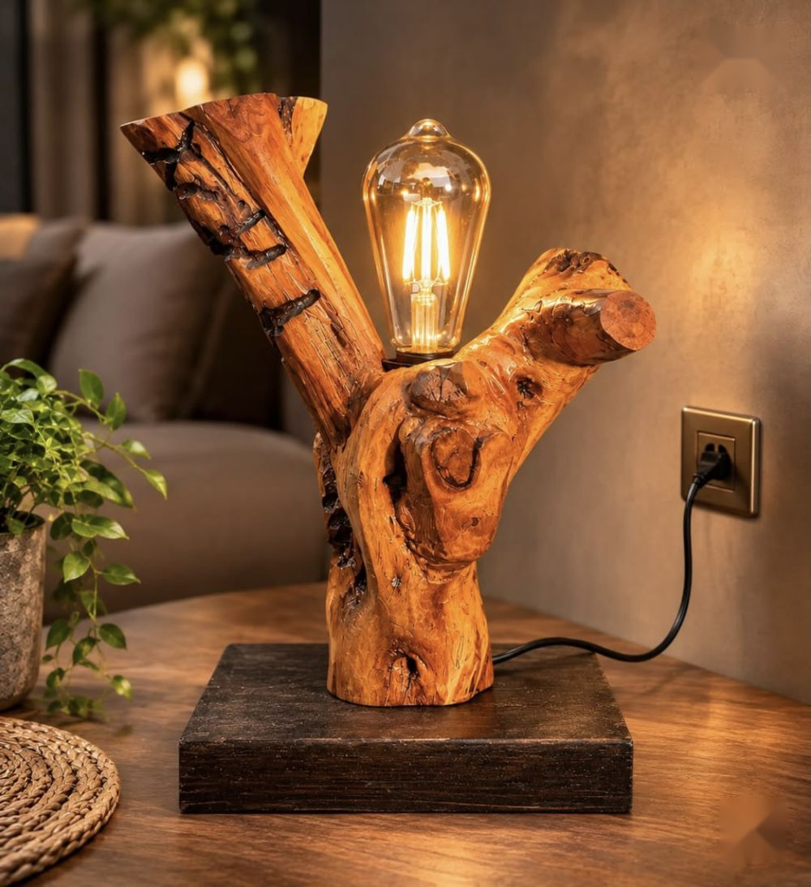
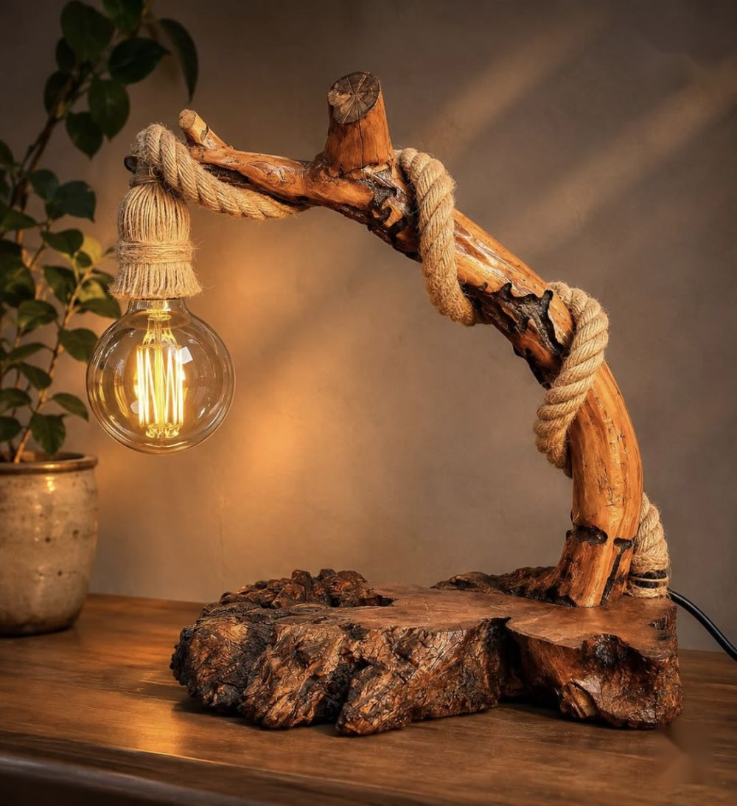
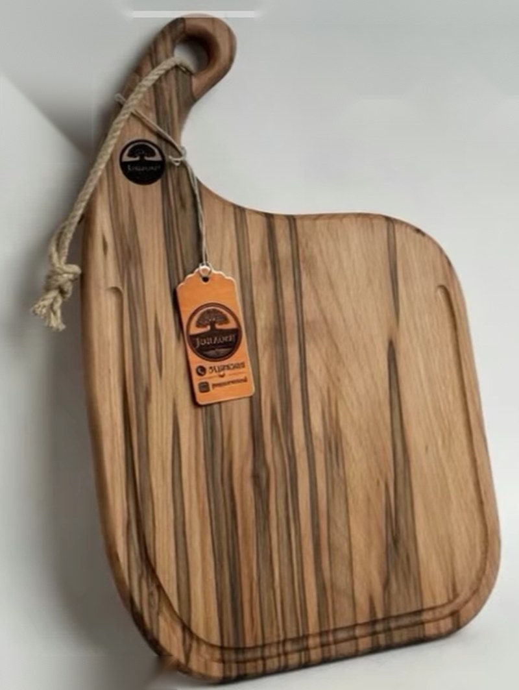
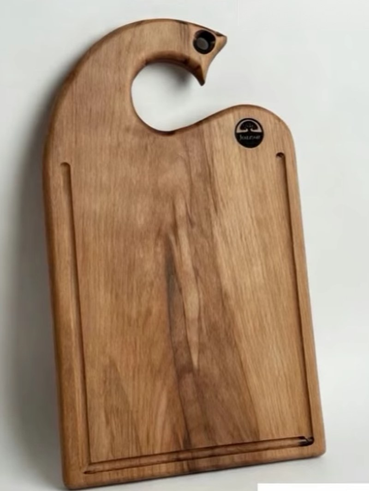

Forked branch lamp
A natural fork holds the bulb, set on a dark wood base.
Handmade in Aadloun, Lebanon
Lamps shaped from branches, roots and solid blocks of wood, and boards for the kitchen. Every piece is made by hand, so no two are alike.

Table lamps
Branches, stone and rope turned into table lamps with warm filament bulbs.
A natural fork holds the bulb, set on a dark wood base.

A curved branch wrapped in thick rope, with the bulb hanging from its tip.

Two little wood-block figures with rope arms and legs, sitting on the edge of a shelf.

Stacked stones beside a curved wooden arm, under a linen shade.

A dark, burnt-finish block of wood with a vintage toggle switch.

Rope laced through the wood like a boot, finished with a bow at the side.
For the kitchen
Natural wood boards for cutting and serving, each one burned with the Jouzour mark.

A handle shaped like a small branch, on a wide, flat cutting surface.

An open loop for carrying or hanging, and a sculpted edge that follows the grain.

A paddle-shaped board with a small loop handle, tied with natural rope and a Jouzour tag.

A flowing, curved handle with a juice groove around the edge, new design.

A cut-out handle at the top and a groove around the surface to catch juices.

The same slot handle on a slimmer board, easy to hang and store.

A plain, solid board with the Jouzour mark burned into the corner.
The name
We start from the wood itself, a branch, a root or a plank, and shape it by hand until it fits a room or a kitchen. The grain, knots and cracks stay visible, because they are what make each piece different.
Order or ask
Message us to order a piece or to ask about a design.
+961 71 109 205